Chapter 10
The pawn islands theory
10.1 Introduction
In the table with ‘Steinitz’s Elements’, the ‘weak pawn’ and the ‘passed pawn’ are labelled as strategic factors. We have seen how a player can ‘tack’ against weak pawns, and about the passed pawn we know that Aron Nimzowitsch spoke of the ‘lust to expand’ of this smallest chess piece. In this chapter we will deal with the ‘pawn islands theory’, with which we mean the following.
Definition:
The player who has the fewest pawn islands, has the advantage.
It is important to define what we mean by a pawn island.
Definition:
By a pawn island we mean one or more pawns that are connected with each other in one way or another.
A diagram will make a lot of things clear.
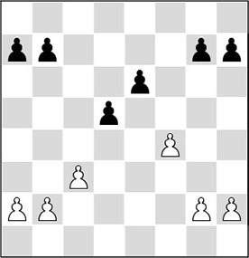
In the next picture, we see four doubled pawns. We can still regard the pawn formations b2, b3 and c2, as well as f3, g2 and g4, as pawn islands, because they show some kinship.
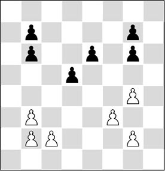
On the basis of the pawn islands theory, White is strategically better in the first schematic diagram. The reason for this is easy to understand. Because he has fewer pawn islands, he has fewer weaknesses. It is economically sound for pawns to protect each other. If a piece has to take over this protection, it loses activity. The more islands, the greater the possibility of weak pawns.
Since the player with more islands is structurally worse, he has to look for dynamic compensation. If we look for such pawn formations in a database, we can find many games where these dynamic factors play a more important role than the structural disadvantages in the pawn formation. In fact, the pawn islands theory is the chess rule that has the most exceptions.
To keep the picture clear, I have distinguished between the ‘pros’ and ‘cons’. In 10.2 we will see in which cases islands are a disadvantage. In 10.3 we see instances where the side with more pawn islands still gets the better of the play.
10.2 When are pawn islands disadvantageous?
It is useful to formulate a number of criteria in order to reach a correct verdict about a position. In fact, we have to know which features apply if we want to know when a player has problems with his pawn structure. For this purpose, I have investigated a great number of games in order to get an idea of what these problems are. This has enabled me to make the following subdivision:
A) Problems in the middlegame
A1) Passive protection by pieces
A2) Positional blockade by enemy pieces
B) Problems in the endgame
I shall illustrate these cases with the help of examples.
A) Problems in the middlegame
A1) Passive protection by pieces
In a position with mainly major pieces on the board, the side with more pawn islands will often feel the weaknesses in his pawn formation. If the opponent can target these weaknesses, the logical consequence will be that the pawn must be protected by pieces, and, consequently, these pieces become less mobile. It is not surprising that in such cases the other side will often be able to organize an attack on the king. We can see a beautiful illustration in the following example.
In the diagram position we can observe that Black is better according to the pawn islands theory: White has weak pawns on a4 and c3, Black has, at most, one: on e6.
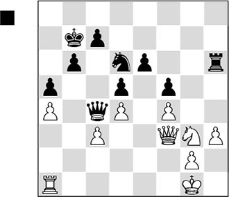
Since White has to defend the weak pawns with his pieces, he is forced into a passive role, and Black can comfortably prepare an attack on the white king.
1…♕b3!
Black activates his queen, which will have its say on the second rank.
2.♘e2
The alternative 2.♕d3 ♕b2 3.♖b1 ♕a2 4.♕d1 ♖g6 5.♘e2 would have been no bed of roses either after 5…♘e4.
2…♕c2 3.g4?
A bad move that hastens White’s downfall, but there is no satisfactory answer to the threat of …♖g6, followed by …♘e4, with which Black slowly mounts the pressure.
3…fxg4 4.hxg4
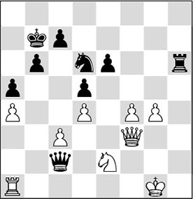
4…♖h4
Even stronger is 4…♕h7!, when the invasion of the rook, and that of the knight via the e4-square, would be virtually decisive.
5.♖c1 ♕h7!
One move later Keres finds the same powerful attacking idea. It is interesting to see how the black queen participates in the attack via both the open h-file and the b1-h7 diagonal. The helpless positions of the white pieces also catch the eye. Since they must protect the weaknesses, they are not capable of dealing with the following blitzkrieg attack.
6.c4 ♖h3 7.♕g2
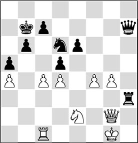
7…♕d3!
The black queen pays another visit. This time it is immediately decisive.
8.cxd5 ♘e4 9.dxe6 ♕e3+ 10.♔f1 ♖f3+
0-1
The white player in the previous fragment was defeated by a lack of activity of his own pieces, whereas we could see that the black pieces cooperated well.
A2) Positional blockade by enemy pieces
If a pawn structure is blockaded by enemy pieces, this will mean that the prospects for the defender are not so rosy. Nimzowitsch, our teacher of days past, has bequeathed to us his famous ‘blockade strategy’. In simple words, his theory boils down to the fact that it is very pleasant if we can blockade the enemy’s pawn formation with pieces. If your pawns cannot move forward, in practice this will mostly imply that your pieces will be forced into a defensive role and will be craving for activity. If we translate this into the pawn islands theory, we see that in general the side with the most islands is in greater danger of being blockaded. This is because he has fewer pawns at his disposal to remove a possible blockade. We can see the advantages of a blockade in the following example:
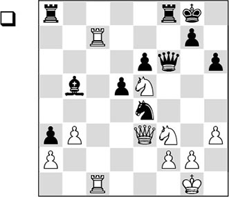
Prior to this fragment White, following Nimzowitsch’s blockade strategy, has given up his central pawns with d4xc5 and e5xf6, in order to control the d4- and e5-squares with his pieces. In the diagram position it becomes clear that he has built up a splendid blockade on the dark squares in the centre. The white knights have a firm grip on the position and they cannot readily be driven away by the black pieces. As the black pawns on e6 and d5 are kept under control, Black misses the dynamism that he should have in compensation for the positional defect in his pawn structure. In the following, the gravity of Black’s problems is made clear.
1.♘g4! ♕g6
If Black offers the exchange of queens with 1…♕f4, he will land in a hopeless endgame where the weaknesses will soon make themselves felt, as is illustrated by the line 2.♕xf4 ♖xf4 3.♘d4, and White wins material.
2.♘d4 ♗e8
Also after 2…h5 3.♘e5 ♕f6 4.f4!, White is pulling the strings.
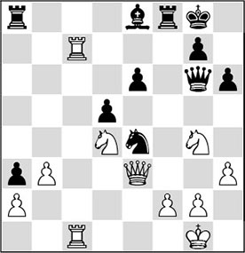
3.f3
The only active black piece is pushed from its pedestal.
3…♘g5 4.h4 h5
This move loses material, but the game would also have been over after a knight move. The pawn on e6 will fall, and with it Black’s position collapses.
5.♘e5 ♘h3+ 6.♔h2 ♕f6 7.♔xh3
1-0
We have seen here that the occupation of the centre with pawns is not always a goal in itself. What is more: White has given up his two centre pawns in order to build up a complete blockade on the dark squares in the centre. The black pieces had to protect the weak pawns and could not improve themselves, because the white knights on the d4- and e5-squares played a very dominant role.
In the following instructive example we can see that a tactically well-versed player like Tal was also capable of manoeuvring against an enemy pawn structure:
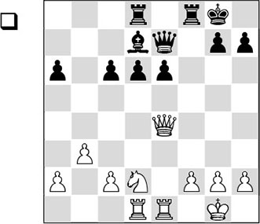
1.♕d3!
A multifunctional move. First of all White focuses on the weak pawn at d6, trying to induce it to move forward. If Black is forced to push …d6-d5 and White can keep the e5-square blocked, then the black bishop will lose a great deal of its activity.
The second intention of the text move is to attack the pawn on a6, and the third idea is to shield White’s own kingside with ♕d3-g3. Finally, White wants to make the knight move ♘d2-c4 possible – another reason to move the queen away, ruling out the pawn fork.
1…♕f7
According to Tal, Black should have preferred 1…♗c8.
2.♕g3!
Obviously, Tal does not exchange the f2-pawn for the d6-pawn, even though this would not be a bad decision according to the pawn islands theory! His king would then be in danger, whereas after the text move he has a tangible positional advantage and Black does not obtain any counterplay.
2…♕f5
Also after 2…♕f4 3.♕xf4 ♖xf4 4.♘e4 d5 5.♘c5, White has a big advantage, since he has managed to block the enemy pawns on the – for Black – wrong colour.
3.♘c4!?
3.♘f3 was another (good) idea.
3…d5
This ‘suicidal push’ is more or less forced, as Black would also be in very bad shape after 3…♕xc2 4.♖d2, followed by 5.♘xd6.
4.♘e3
The knight cannot go to the beautiful e5-square just yet, as then Black would take on c2.
4…♕f4?!
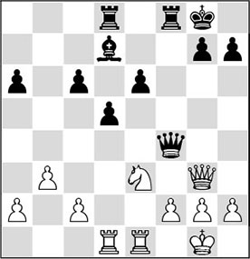
In principle Black would have done better to keep the queens on the board. In the ensuing endgame he has no chance.
5.♘g4!
White now exchanges the queens in even more favourable circumstances.
5…♕xg3 6.hxg3 ♔f7 7.c4 ♗e8
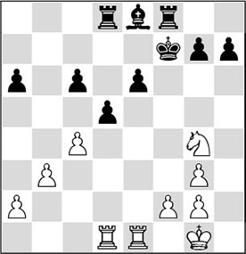
8.♖d4
Tal himself thought that 8.♘e5+ was the correct continuation. After 8…♔e7 9.♖d4 c5 10.♖g4 ♖g8 11.cxd5 ♖xd5 12.♘f3, he claims that Black is positionally bankrupt.
That is quite questionable. In earlier chapters we have been able to see that an endgame of good knight versus bad bishop is almost always very promising for the side with the knight. The power of the knight increases when more pawns are fixed on the – for White – right colour.
Presumably, 8.c5 was the best continuation here, possibly followed by f2-f4.
8…c5
This attempt to become active will backfire on Black, but otherwise White could have established a complete blockade with 9.c5 after all. Another winning plan for White consists of exchanging on d5 and then switching the rook to the queenside via d4.
9.♖d2
Better than 9.♖f4+?!, which would quite unnecessarily give Black counterchances with 9…♔g8 10.♖xe6 ♖xf4 11.gxf4 dxc4 12.♖xa6 c3.
9…d4 10.♖de2 ♖d6 11.♘e5+ ♔e7 12.♘d3 ♖f5 13.g4! ♖g5

The rook is now caught in broad daylight, and the win is not far off.
14.♘e5 d3 15.♖d2
Also possible was 15.♘xd3 ♖xg4 16.♘xc5, with a decisive advantage.
15…♖d4
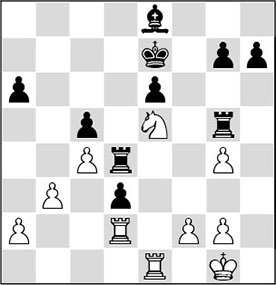
16.g3!
This prepares 17.f4, compelling Black to give up the exchange. Tal finishes the job without trouble.
16…h5 17.f4 ♖xg4 18.♘xg4 hxg4 19.f5 ♗c6 20.♖xe6+ ♔d7 21.♖g6 ♗e4 22.♖xg7+ ♔d6 23.f6
1-0
B) Problems in the endgame
The previous fragments showed a clear pattern. In general, the fewer pieces there are on the board, the better it is for the player with the fewer pawn islands. This sounds logical, since the player with the most islands, and consequently the most weaknesses, has to search for active piece play. In practice, the fewer pieces he has at his disposal, the less counterplay he will have.
In the Tal-Byrne fragment we saw how the white player managed to blockade the enemy centre in the middlegame, enabling him to comfortably liquidate to the endgame, where the weaknesses made themselves felt.
In the following fragment we see a flawless technical achievement by Keres, who succeeds in exploiting a few positional advantages in a bishop ending.
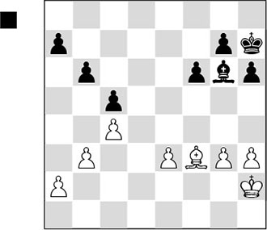
In this position Black clearly has the better prospects.
The advantages are:
- According to the pawn islands theory, White has more weak pawns than Black. Because of the pawn on e3 White is forced to concede the beautiful e5-square to his opponent, to which the black king can be played;
- As the white pawns on the queenside are on the colour of his bishop, and they can be more or less fixed there, Black can reduce the activity of the enemy bishop to a minimum.
1…♗b1 2.a3 a5!
Keres prevents the possibility of 3.b4, forcing White to continue with weak pawns on b3 and c4.
3.♗d1 ♔g6 4.♔g2 ♔f5 5.♔f3 ♔e5
The black king has landed on the ideal square, and now Keres can comfortably figure out how to make progress. At this point the game was adjourned, and the interim analysis produced the following standard winning plan:
- Stage 1: Since White does not have any bishop moves that do not lose a pawn, Black can push his kingside pawns unhindered with …g7-g5 and …f6-f5.
- Stage 2: At the right moment, Black plays …f5-f4, conquering the d4- or f4-square for his king.
- Stage 3: From one of these squares, the king threatens to invade either on the kingside or on the queenside, so that White cannot avoid material loss in the long run.
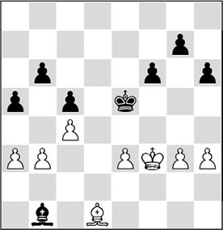
6.a4 g5 7.♔e2?!
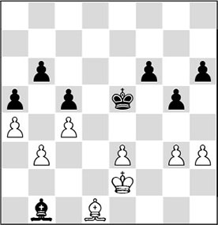
7…♗f5!
Keres abandons the winning plan outlined above, because he sees that in these circumstances he can force a quicker win with a different plan.
8.g4
Out of dire necessity, White has to put another pawn on the wrong colour. The point of Black’s switch was that after 8.h4 ♗g4+, the pawn ending would be hopeless for White.
8…♗b1 9.♔f3 f5 10.gxf5
If White tries to postpone this swap, he will lose even more quickly: 10.♔e2 f4 11.♔f3 fxe3 12.♔xe3 ♗e4, and White is in zugzwang.
10…♔xf5 11.♔f2 ♗e4
The logical 11…♔e4 does not lead to the desired result, as White has the simple 12.♗h5. With the text move Black deprives the white king of the f3-square, and with …♔g6 he will prepare the …h6-h5 push.
12.♔g3 ♔g6 13.♔f2
After 13.h4 Keres demonstrates that with 13…h5! 14.♔h3 ♗d3 15.♔g3 ♗f5!, White would end up in zugzwang again. So he must exchange on g5, after which the h-pawn will easily decide the issue. After the text move, a new weakness is fixed on h3.
13…h5 14.♔g3 h4+ 15.♔f2 ♗f5 16.♔g2 ♔f6
Now that the white king is tied to the new weakness, a king march through the centre will decide the game.
17.♔h2
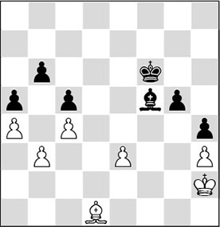
17…♔e6!
0-1
A final subtlety. After the forced 18.♔g2 ♔e5 19.♔h2, 19…♗b1! wins: 20.♔g2 ♔e4 21.♔f2 ♔d3, and the black king enters the position decisively.
10.3 When are pawn islands useful?
A more aggressively inclined player who has studied the above examples carefully might just be in anguish now, when he sits down at the board.
Should he watch his pawn structure extremely carefully and forget about his usual keen eye for piece play and mating attacks? Is it time to put his offensive aspirations on hold as soon as he has sinned against the strategic laws, albeit ever so slightly?
Fortunately, no. This section also contains good news for the attacking player. The player with the greater number of pawn islands must search for active piece play in order to compensate for his positional defects. He should strive to keep as many pieces on the board as possible. He should never forget that piece activity is the most important of all. A healthy pawn structure does not bring universal happiness; not if you are faced with a dangerous attack.
In the pawn formation of the schematic diagram (on the first page of this chapter) we can not only point at drawbacks for the player with the most pawn islands. This pawn formation also harbours chances for him. If we assume that White has castled, the f-file will give him attacking chances in certain situations.
The trick in the following diagram will appeal to these ‘former’ tacticians.
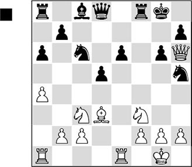
Optically speaking, things have gotten a little out of hand for Black. He is weak on the dark squares in the centre, he has three pawn islands and his pieces do not cooperate. But one factor works in his favour: the f-file!
1…♖xf3!?
Good or bad, the second player hardly had a choice. The white king position is now irreparably damaged and especially the black knight will suddenly find a beautiful square. The sacrifice has reduced White’s central control and diminished his chances for a blockade.
2.gxf3 ♘d4 3.♖e3 ♗d7
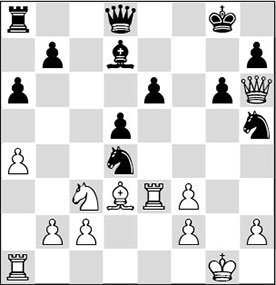
4.♔h1?
The sudden role reversal causes White to collapse. He should have exchanged the strongly placed knight with 4.♘e2, although after 4…♘xe2+ 5.♗xe2 ♕f6 6.c3 ♘f4 Black also has (more than) enough compensation for the sacrificed exchange. The king move is based on a miscalculation.
4…♕h4 5.♔g1
Bitter necessity, as the threat of 5…♘g3+ cannot be parried any other way.
5…♖f8 6.♘e2 ♘xf3+ 7.♖xf3
White is already compelled to return the material, but still he cannot stop the black attack.
7…♖xf3 8.♘g3
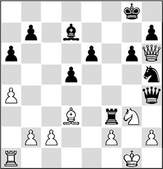
8…♖xf2!?
Black is doing good business along the f-file in this game. The white king is smoked out. Presumably even stronger was 8…♕g4 9.♕d2 ♘f4 10.♗f1 ♗c6, and dark clouds are gathering over the king’s head.
9.♔xf2 ♕xh2+ 10.♔e3 ♕xg3+ 11.♔d2 e5
Besides the fact that Black isn’t badly off materially, he can merrily carry on with his initiative.
12.♖f1?!
Here 12.♕e3 was much more persistent, although Black also keeps excellent winning chances after 12…♕xe3+ 13.♔xe3 ♘f4.
12…♘f4
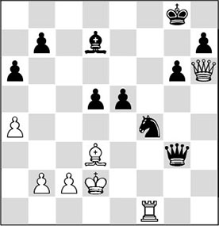
13.♖h1?
But after this new mistake, salvation is no longer possible.
13…♗h3! 14.♔c1 e4
The rest speaks for itself.
15.♗xe4 dxe4 16.♖d1 ♘e6 17.♔b1 ♘f8 18.♖d8 ♕e1+ 19.♔a2 ♗e6+ 20.b3 ♕f2 21.♖d2 ♕f3 22.♕g5 ♕c3 23.♖e2 ♗f5 24.♔b1 h5 25.♖g2 ♕f3 26.♖g3 ♘e6
0-1
Let us return to the problems around the pawn islands theory.
In the previous game we saw the black player make optimal use of the open f-file. Although in a theoretical sense he was saddled with a structural defect, nonetheless he was able to develop maximum activity for his pieces. And herein lies the secret for the player who is confronted with a greater number of pawn islands. He must rely on piece play, on breakthroughs in the centre and on the open files that are available to him.
A frequently-seen pawn formation is the one presented schematically in the following diagram.
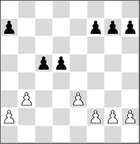
A player with an adventurous nature can allow hanging pawns with a smile. There are opening systems known in theory, for instance in popular openings such as the Queen’s Indian, where these hanging pawns are regular guests, and black players obtain good scores with them. And even though we now know that the player who has more pawn islands should do everything he can to keep as many pieces on the board as possible, he should never despair if the opponent does manage to swap a number of pieces: his chances against the enemy king will always be lurking in the background. The following fragment, between two sworn arch-rivals, illustrates this theme beautifully.
TD 5.2 (D02)
1.d4 d5 2.♘f3 c5 3.c4 e6 4.e3 ♘f6 5.♗d3 ♘c6 6.0-0 ♗d6 7.b3 0-0 8.♗b2 b6 9.♘bd2 ♗b7 10.♖c1 ♕e7 11.cxd5 exd5 12.♘h4 g6 13.♘hf3 ♖ad8 14.dxc5 bxc5 15.♗b5 ♘e4 16.♗xc6 ♗xc6 17.♕c2 ♘xd2 18.♘xd2
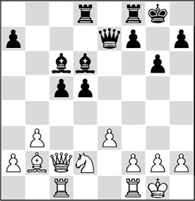
Superficially, White seems to be doing fine. He has already managed to exchange two minor pieces, and now he can prepare to start manoeuvring against Black’s potential weaknesses. For instance, he has the positional threat of 19.b4. Besides, he is dreaming of mates on the long diagonal. But he is in for a rude awakening.
18…d4!
Here we see that the dynamic factors in the position can sometimes completely neutralize the static disadvantages. Black does not bother about his potential weaknesses, but brutally opens up the position so as to commit a heavy assault on the white king.
19.exd4
Perhaps 19.e4 was the appropriate move.
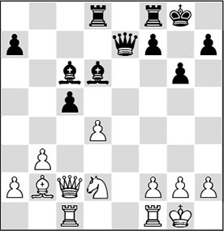
The critical moment of the game has arrived. With the following double bishop sacrifice, Tarrasch follows in the footsteps of Emanuel Lasker, who made the same sacrifices in his famous game against Bauer, Amsterdam 1889.
19…♗xh2+
Tarrasch does not beat about the bush. With a piece sacrifice he forces a passage to the white king. A closer look reveals that the other bishop sacrifice 19…♗xg2! would have been even stronger: after 20.♔xg2 ♕g5+ 21.♔h1 ♕f4 White is forced to return his piece to avoid immediate mate: 22.♘f3, and after 22…♕xf3+ 23.♔g1 cxd4 his position is obviously hopeless. But after 22.♔g2, Black had to have foreseen the brilliant 22…♖fe8!.
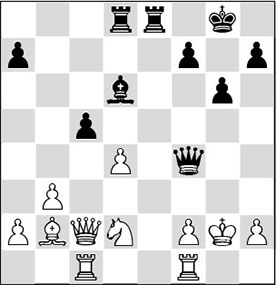
Analysis diagram
The rook, among others, takes away the most important escape squares from the white king, and so the threat of …♕xh2+ followed by …♕h3 mate is on the cards. There is no decent defence available, for example: 23.♖h1 ♖e2, and now 24.♖cf1 is met by the always quite artistic epaulette mate 24…♕g4.
20.♔xh2 ♕h4+ 21.♔g1 ♗xg2!
Attacking players will really enjoy this game. Weak pawn islands do not matter at all. It’s the enemy king that’s at stake here!
22.f3
White cannot afford to accept the second bishop sacrifice. After 22.♔xg2 ♕g4+ 23.♔h2 ♖d5, the mate can only be averted at great material loss: 24.♕xc5 ♖h5+! 25.♕xh5 ♕xh5+ 26.♔g2 ♕g5+, and the knight on d2 will also leave the board.
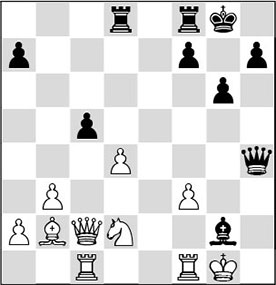
22…♖fe8!?
According to Tarrasch Black could also have opted for 22…♗xf1, but he prefers to go on attacking.
23.♘e4?
Objectively, 23.♖fe1 was the only move to continue the struggle. After 23…♖xe1+ 24.♖xe1 ♕xe1+ 25.♔xg2 ♕e2+ 26.♔g3 cxd4, Black keeps a clear advantage, but he would still need to prove something. After the text move it’s a piece of cake for Black.
23…♕h1+ 24.♔f2 ♗xf1 25.d5 f5 26.♕c3
White was dreaming of this diagonal once. But his dreams were rudely shattered.
26…♕g2+ 27.♔e3
Now Black finishes the job elegantly.
27…♖xe4+
A nice final combination, leading to a forced mate.
28.fxe4
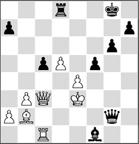
28…f4+
It would have been mate in three after 28…♕g3+ 29.♔d2 ♕f2+ 30.♔d1 ♕e2#, but the way Tarrasch concludes this game is not bad either.
29.♔xf4 ♖f8+ 30.♔e5 ♕h2+ 31.♔e6 ♖e8+ 32.♔d7 ♗b5#
0-1
‘Hanging pawns’ do not always result in mating attacks. However, to deal with all the problems connected with this theme would lead us outside the scope of this book. There are more ideas that can be conceived for a player with hanging pawns. We have said before that this player has more space at his disposal to put his pieces in good positions, and often he gets the chance to convert one of his central pawns into a passed pawn. This is an interesting given, which can lead to paradoxical phenomena.
In principle, the player who has to play against the hanging pawns strives to exchange all the minor pieces. With major pieces he can generally exert firm pressure on the enemy position. But supposing he actually manages to realize this general exchange, and suddenly the hanging pawns are converted to a passed pawn?
In the chapter on the passed pawn we have learned that in principle the player who has the passed pawn wants to keep the major pieces on the board! See the game Petrosian-Kortchnoi, Il Ciocco 1977 (page 91).
In short: hanging pawns can lead to an interesting, ambiguous battle.
Another plan which the player with the hanging pawns can follow, is to make use of open files. Former World Champion Bobby Fischer showed how.
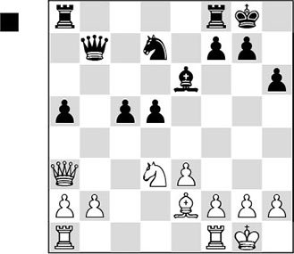
A characteristic position. White has already managed to exchange two pieces and prepares to put the question to the hanging pawns. Superficially, it looks as if his chances should be rated more highly, but it is clear that the manoeuvres with the white knight have been a little slow. The white player does not have the slightest clue what he is in for in this position.
1…c4!
A remarkable decision. Black puts his pawns on the wrong colour (that of his bishop) and voluntarily gives up the beautiful central d4-square. In other, similar cases, we would immediately condemn such a pawn move, but here it is justified. With active piece play along the open b-file, combined with the far advanced c-pawn, Fischer succeeds in amply compensating for the positional disadvantages in his position. Due to, among others, the pressure along the b-file, the white pieces will be wrong-footed shortly.
2.♘f4 ♖fb8 3.♖ab1?
A critical moment. After the text move White will soon end up in a lost position. Better is 3.♘xe6 fxe6 4.♗g4 ♖a6! 5.b3! (5.♕e7? ♘f8; 5.♖ab1 ♕b4 6.♕c3 ♕xc3 7.bxc3 ♖ab6) 5…cxb3 6.axb3 ♕xb3 7.♕e7 ♘f8 8.♖a3 ♕b4 with a small edge for Black, as Fischer himself has indicated. This advantage is very marginal, though, as after 9.♕xb4 ♖xb4 10.♗e2 ♖a7 11.♖fa1 a4 12.♗d1, the position is completely dead.
Another idea is to make an attempt at activity with 3.e4. After 3…♕xb2 4.♕xb2 ♖xb2 5.exd5 ♗xd5 6.♖fe1 ♖e8, however, White has too little compensation for the pawn.
3…♗f5! 4.♖bd1 ♘f6
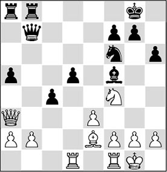
5.♖d2
Fischer indicates that 5.♗f3 would not be a solution to the problem in this position. After 5…♕xb2 6.♕xb2 ♖xb2 7.♘xd5 ♘xd5 8.♗xd5 (in case of 8.♖xd5 ♗e6 9.♖c5 ♖c8! 10.♖xa5 c3 11.♖c1 c2, the black c-pawn is too strong. A pretty line is: 12.♗e4 ♖b1! 13.♖xb1 cxb1♕+ 14.♗xb1 ♖c1#) 8…♖c8 9.e4 ♗e6! 10.♗xe6 fxe6 11.a4 c3, and the black passed pawn decides.
In the diagram position White is ready for 6.♗f3, followed by the possible knight manoeuvre ♘f4-e2-d4, after which he will hold all the positional trumps. Black must be quick, and with his next move he puts a spoke in his opponent’s wheel.
5…g5!
A strong move.
6.♘xd5
This blunders a piece. Necessary was 6.♘h5 ♘e4 7.♖c2 ♕b4!, maximizing Black’s pressure on the queenside. Not 7…♘xf2? in view of 8.♕c3!, and White wins.
6…♘xd5 7.♗xc4
7.♗f3? is met by 7…♗d3.
7…♗e6
Now White hastens the end with a mistake:
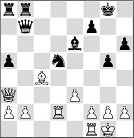
8.♖fd1?
Better was 8.♗xd5 ♗xd5 9.f3, but the pawns do not nearly balance the piece. Now it looks as if White can develop counterchances with 9.♕d6, but Black can keep taking pawns unpunished with 9…♗xg2, as after 10.♕xh6 he wins easily with 10…♖a6! 11.♕xg5+ ♖g6.
8…♘xe3! 9.♕xe3
Even worse is 9.♗xe6 ♕xg2#.
9…♗xc4 10.h4 ♖e8 11.♕g3 ♕e7 12.b3 ♗e6 13.f4 g4 14.h5 ♕c5+ 15.♖f2 ♗f5
0-1
Conclusion: In general the player with the greater number of pawn islands should place his bets on the middlegame. If pieces are exchanged, his attacking chances will be reduced and the weaknesses in his pawn formation will make themselves felt.
Exercises

On the basis of the ‘pawn islands rule’, we can claim that in the diagram position Black has the better prospects. Can you indicate – analogously to the example we have discussed in the text – which strategy he should pursue in order to confront White with the defects in his position? With which move would you start?
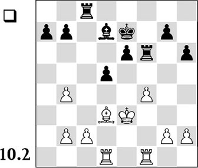
Black has three pawn islands in the endgame against two for White, and therefore the latter is better. The question is: how should he convert this positional advantage into something more concrete?
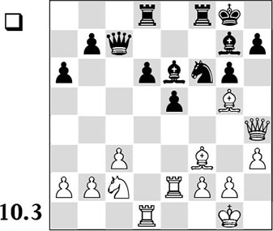
At first sight Black appears to have the position well under control. However, White proves that the defects in the black pawn formation are more serious than would appear superficially. With which manoeuvre does he push Black against the wall?
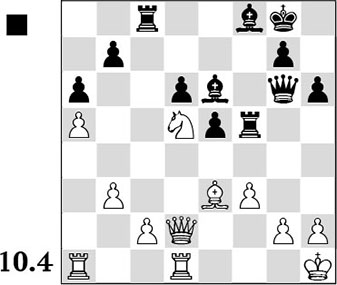
White has fewer pawn islands and he has also managed a blockade of the black centre pawns already. If we add that the black bishop pair cannot become active, the victory should be merely a matter of time. Is there no possibility at all for Black to fight back? Choose from:
A) 1…♖h5
B) 1…♖xf3
C) 1…♖c5.